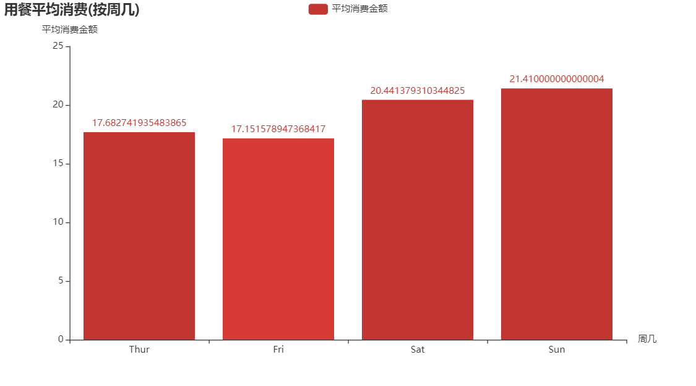

pyecharts绘图
学习目标
- 能够使用 pyecharts 进行基本绘图操作
1. echarts 和 Pyecharts 简介
echarts 简介:
- echarts 是一个使用 JavaScript 实现的开源可视化库，涵盖各行业图表，满足各种需求
- echarts 遵循 Apache-2.0 开源协议，免费商用
- echarts 兼容当前绝大部分浏览器（IE8/9/10/11、Chrome、Firefox、Safari等）及兼容多种设备，可随时随地任性展示
pyecharts 简介：
- pyecharts 是一个用于生成 echarts 图表的 Python 开源类库
- 使用 echarts 的绘图效果比 matplotlib 等更加炫酷
2. Pyecharts 绘图案例
由于前面的内容基本已经介绍了常用可视化图表和各自的特点，下面通过一个案例来介绍 Pyecharts 的使用：
案例中使用的 pyecharts 版本是 1.6.0 ，pyecharts 0.X版本和 1.X版本 API 变化较大，不能向下兼容，网上查资料的时候需要注意
直方图：
参考文档：https://gallery.pyecharts.org/#/Bar/bar_xyaxis_name ，更加详细的 API 可以参考 pyecharts 的官方文档和案例
1）按 day(周几) 统计每餐消费的平均值并进行可视化
from pyecharts import options as opts
from pyecharts.charts import Bar
# 按 day(周几) 统计每餐消费的平均值
result = tips.groupby('day').total_bill.mean()
c = (
Bar()
.add_xaxis(result.index.tolist()) # 需要将 result.index 转换为列表
.add_yaxis("平均消费金额", result.values.tolist()) # 需要将 result.values 转换为列表
.set_global_opts(
title_opts=opts.TitleOpts(title="用餐平均消费(按周几)"),
yaxis_opts=opts.AxisOpts(name="平均消费金额"),
xaxis_opts=opts.AxisOpts(name="周几"),
)
)
# 在 jupyter notebook 中绘制图形，显示需要调用 render_notebook 方法
c.render_notebook()

总结
- echarts 是基于 js 的开源可视化库，pyecharts 是 echarts 的 python 封装，利用 pyecharts 可以绘制具备交互性的炫酷图形
- pyecharts 1.*版本的绘图 api 还是具有一定规律的
- Bar()、Pie() .... 创建绘图对象
- .add()、.add_xaxis()、.add_yaxis()添加数据
- .set_global_opts() 设置全局参数
- .render_notebook()：在notebook中绘制
- .render()：生成文件